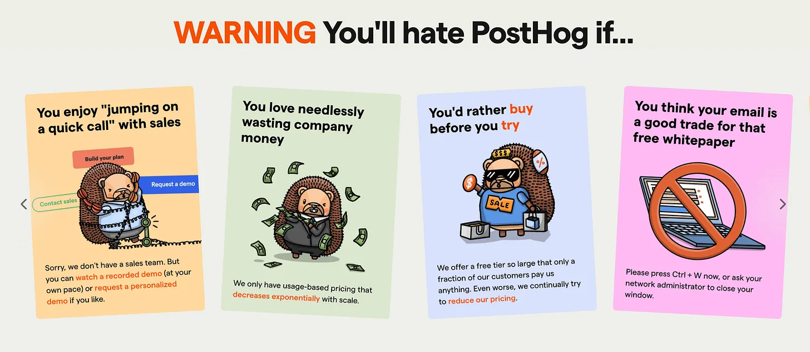
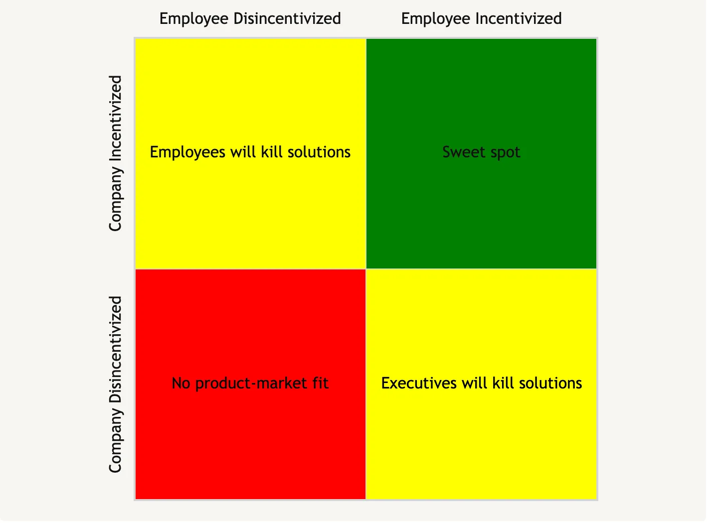

Unusual’s Startup Field Guide says:
We’ve found startups to be less optimal design partners…While they have extreme urgency and can certainly move quickly, they lack the stability and consistency that a [larger] company has. In addition, they often have small budgets and a high propensity to “DIY.” They are often consumed with their own challenges and feedback so you can easily get lost in the shuffle.
We’re trying to make startups our design partners and early customers in spite of advice like this. Here’s why.
For startups, building (vs. buying) has a higher opportunity cost
Let’s start with Unusual’s claim that startups have a higher propensity to DIY than larger companies. That can’t be right. Startups need to grow much more quickly than large companies in order to satisfy their investors. Given that, the hurdle rate for any internal tool building should be much higher.
Concretely, given the choice between building feature X that accelerates revenue growth or tool Y that can be purchased off the shelf, smart founders will choose to buy Y and build X. This is good for tool vendors like us.
Selling to startups forces PLG
Unusual also warns that startups have small budgets. That’s obviously bad if you’re optimizing for revenue, but there’s an advantage to working with customers who have small budgets: you’re forced to execute on PLG (or some other efficient GTM strategy) from the get-go.
That forcing function is good because going from sales-led to product-led is hard and because if a competitor figures out how to do PLG before you do, you’re in big trouble. (This is one of the more useful pieces of advice I’ve ever received from a VC.)
I was at Heap as they started to transition from sales-led to product-led and it was hard. Now PLG upstarts like Posthog seem to be giving them and run for their money:

Might have been better if Heap was PLG from the outset. Again, selling to startups with small budgets makes this happen automatically.
Startup employees won’t compete with your solution
When people need work, they’ll advocate to build instead of buying whatever you’re selling, even if building is suboptimal for the company. Conway of “Conway’s law” puts it this way:
Probably the greatest single common factor behind many poorly designed systems now in existence has been the availability of a design organization in need of work.
Larger companies are often full of employees who are eager to solve “fun problems,” even if those problems should be solved by a vendor. In other words, at larger companies its harder to be in the below sweet spot where both companies AND employees are incentivized to adopt your solution:

Startups don’t have this problem. They don’t have enough people to do all the work. There’s no one sitting around trying to justify their salary who can plausibly argue the startup should build in-house. This is a big part of why startups are all in the cloud, but there’s still a ton of legacy enterprises with expensive, on-prem servers.
Startups turn into companies that everyone wants to copy
For a while, everyone wanted to be like Google, then everyone wanted to be like Facebook. Now everyone wants to be like OpenAI. If you sold software to a startup that becomes a darling of Silicon Valley, their logo is going to boost your sales a ton. When I first saw OpenAI’s logo on pilot’s landing page, I was already 75% of the way to opening my wallet.